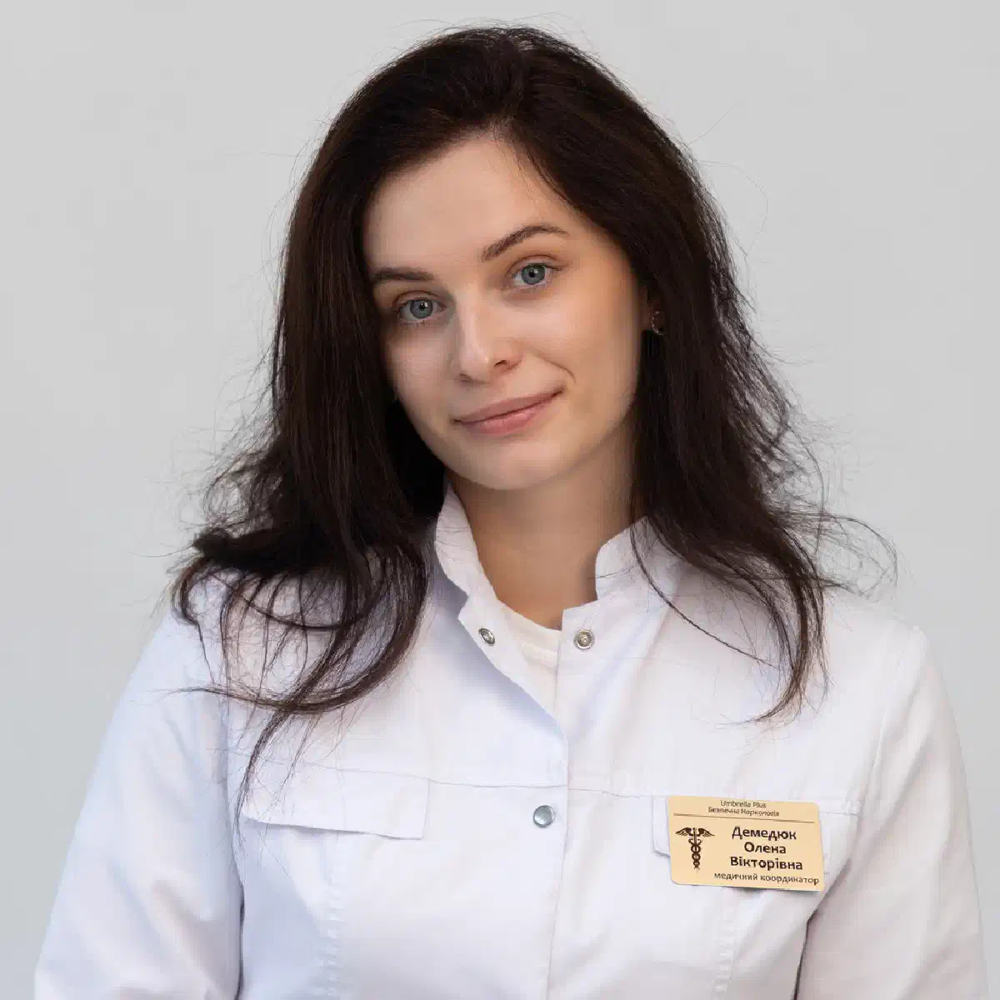

+38(068) 79 72 782
+38(068) 79 72 782Крапельниця від отруєння Чугуїв
Медична допомога, якій довіряють


Безкоштовна консультація, працюємо цілодобово 24/7
Медична допомога, якій довіряють

Дата написання: Оновлюється...
Останнє оновлення: Оновлюється...
Крапельниця від отруєння в Чугуєві — це медична допомога, спрямована на швидке полегшення стану при харчовій інтоксикації, нудоті, блюванні, слабкості, зневодненні та загальному погіршенні самопочуття. Харчове отруєння може розвиватися після вживання неякісних продуктів, зараженої води, простроченої їжі, погано обробленого м’яса, риби, молочних продуктів, консервів або страв, які зберігалися з порушенням температурного режиму.
При отруєнні організм відчуває серйозне навантаження. Токсичні речовини подразнюють шлунково-кишковий тракт, порушують травлення, погіршують загальне самопочуття і можуть призводити до вираженої слабкості, запаморочення, ознобу, болю в животі, діареї та багаторазового блювання. На тлі втрати рідини організм швидко втрачає електроліти, що може негативно відображатися на роботі серця, судин, нирок і нервової системи.
У таких випадках крапельниця допомагає поповнити дефіцит рідини, відновити водно-електролітний баланс, зменшити прояви інтоксикації та підтримати роботу внутрішніх органів. Інфузійна терапія особливо важлива, якщо пацієнт не може самостійно пити воду через нудоту або блювання. Введення розчинів внутрішньовенно дозволяє швидше стабілізувати стан, знизити слабкість, зменшити запаморочення і прискорити відновлення організму. Крапельниця при отруєнні в Чугуєві може проводитися вдома після огляду лікаря, якщо стан пацієнта дозволяє лікуватися поза стаціонаром. Спеціаліст оцінює скарги, вимірює тиск, пульс, визначає ступінь зневоднення, уточнює тривалість симптомів і можливу причину отруєння. На підставі цього підбирається індивідуальна схема допомоги з урахуванням віку пацієнта, загального стану здоров’я і наявності хронічних захворювань.
Харчове отруєння зазвичай проявляється через кілька годин після вживання неякісної їжі, однак у деяких випадках симптоми можуть розвиватися швидше або, навпаки, з’являтися через добу. Усе залежить від причини інтоксикації, кількості токсинів, стану імунітету, віку пацієнта, загального здоров’я організму і наявності хронічних захворювань. Іноді людина спочатку відчуває лише легкий дискомфорт у животі, але через кілька годин стан може різко погіршитися.
До основних ознак харчового отруєння належать нудота, блювання, біль або спазми в животі, діарея, слабкість, запаморочення, озноб, підвищена температура, пітливість і відсутність апетиту. Також у пацієнта може з’являтися сухість у роті, сильна спрага, прискорене серцебиття, зниження тиску, тремтіння в тілі і виражений занепад сил. Ці симптоми вказують на те, що організм намагається позбутися токсинів, але одночасно втрачає рідину і важливі електроліти.
Особливо небезпечний стан, коли блювання і діарея повторюються багаторазово. У цьому випадку організм швидко втрачає воду, солі і мікроелементи, необхідні для нормальної роботи серця, судин, нирок і нервової системи. Зневоднення може розвиватися досить швидко, особливо якщо пацієнт не може пити рідину через постійну нудоту або одразу її втрачає при блюванні. Чим сильніше виражені симптоми, тим вищий ризик ускладнень. Особливої уваги потребують діти, літні люди, вагітні жінки і пацієнти з хронічними захворюваннями шлунка, кишечника, печінки, нирок або серцево-судинної системи. У таких людей отруєння може протікати важче, а зневоднення та інтоксикація розвиваються швидше. Якщо слабкість наростає, температура тримається, блювання не припиняється, з’являється сильний біль у животі, сплутаність свідомості, рідке сечовипускання або виражена сухість у роті, необхідно звернутися по медичну допомогу. Лікар оцінить стан пацієнта, визначить ступінь зневоднення і підбере безпечну схему лікування, включаючи крапельницю за необхідності.
Виклик лікаря не можна відкладати, якщо стан пацієнта швидко погіршується, блювання або діарея повторюються багаторазово, з’являється сильна слабкість, сплутаність свідомості, висока температура, виражений біль у животі або ознаки зневоднення. Небезпечними симптомами також вважаються сильна сухість у роті, рідке сечовипускання, запаморочення, різке зниження тиску, прискорене серцебиття, холодний піт і виражений занепад сил. Такі прояви можуть вказувати на серйозну інтоксикацію, втрату рідини і порушення роботи внутрішніх органів.
Особливо важливо звернутися по медичну допомогу, якщо людина не може пити воду через постійну нудоту або блювання. У такій ситуації організм продовжує втрачати рідину, але не отримує її назад, через що зневоднення може швидко посилюватися. Це небезпечно для серця, судин, нирок і нервової системи. Чим довше зберігається такий стан, тим вищий ризик ускладнень і тим складніше відновити нормальне самопочуття без лікарської допомоги.
Термінова медична допомога необхідна, якщо отруєння сталося у дитини, літньої людини, вагітної жінки або пацієнта із захворюваннями серця, печінки, нирок, шлунка або кишечника. У таких людей ускладнення можуть розвиватися швидше, а навіть помірне блювання або діарея здатні призвести до вираженого зневоднення. Тому важливо не чекати, поки стан стане критичним, а викликати лікаря при перших тривожних ознаках.
Звернутися до лікаря також потрібно, якщо є підозра на отруєння грибами, консервами, рибою, морепродуктами, ліками, хімічними речовинами або невідомими продуктами. У таких ситуаціях домашньої допомоги може бути недостатньо, оскільки деякі види отруєнь потребують термінової діагностики, спостереження і спеціалізованого лікування. Пацієнту може знадобитися стаціонар, аналізи, контроль життєво важливих показників і більш інтенсивна терапія.
Крапельниця при харчовому отруєнні допомагає поповнити втрату рідини, відновити водно-електролітний баланс і знизити навантаження на організм. При блюванні і діареї людина швидко втрачає воду, солі і важливі мікроелементи, через що посилюються слабкість, запаморочення, серцебиття, сухість у роті, зниження тиску і загальне виснаження. Якщо рідина не поповнюється своєчасно, стан може погіршуватися, а зневоднення — наростати.
Інфузійна терапія дозволяє доставити необхідні розчини безпосередньо в кровотік, що особливо важливо, якщо пацієнт не може пити воду через постійну нудоту або блювання. Внутрішньовенне введення розчинів допомагає швидше підтримати організм, ніж звичайне пиття, особливо при вираженій інтоксикації. Крапельниця допомагає зменшити прояви зневоднення, підтримати роботу серця, судин, нирок і нервової системи, а також полегшити загальний стан пацієнта.
Додатково лікар може призначити препарати для зменшення нудоти, нормалізації тиску, підтримки шлунково-кишкового тракту, зниження спазмів і відновлення організму після інтоксикації. За необхідності терапія доповнюється засобами для підтримки печінки, вітамінами і препаратами, які допомагають покращити загальне самопочуття. Склад крапельниці підбирається індивідуально після огляду пацієнта та оцінки ступеня інтоксикації. Після процедури у багатьох пацієнтів зменшується слабкість, проходить виражена сухість у роті, знижується запаморочення і стає легше переносити наслідки отруєння.
Склад крапельниці при харчовому отруєнні підбирається індивідуально і залежить від стану пацієнта, вираженості блювання, діареї, зневоднення, температури, тиску і загального самопочуття. Лікар оцінює скарги, тривалість симптомів, можливу причину отруєння, вік пацієнта, наявність хронічних захворювань і ступінь загальної слабкості. Такий підхід дозволяє підібрати терапію не «за шаблоном», а з урахуванням реальної клінічної ситуації.
Найчастіше інфузійна терапія спрямована на поповнення рідини, відновлення електролітного балансу, зниження інтоксикації та підтримку організму. До складу крапельниці можуть входити розчини для регідратації, препарати для зменшення нудоти, засоби для підтримки печінки, вітаміни, спазмолітики і медикаменти, спрямовані на стабілізацію загального стану. При вираженій слабкості і зневодненні особлива увага приділяється відновленню об’єму рідини і нормалізації роботи серцево-судинної системи.
Якщо пацієнта турбує багаторазове блювання, лікар може додати препарати, які допомагають зменшити нудоту і дозволяють організму краще переносити відновний період. При діареї і втраті рідини важливо поповнити не тільки воду, але й електроліти, оскільки їхній дефіцит може посилювати слабкість, запаморочення, серцебиття і м’язове тремтіння. За необхідності терапія доповнюється засобами для підтримки шлунково-кишкового тракту і загального відновлення. Особливість крапельниці полягає в тому, що вона діє швидше, ніж прийом рідини всередину, особливо якщо у пацієнта зберігається блювання і він не може нормально пити воду. Внутрішньовенне введення розчинів дозволяє швидше доставити необхідні речовини в організм, знизити прояви зневоднення і полегшити стан.
Вартість крапельниці від отруєння в Чугуєві починається від 2199 грн.
| Популярні послуги | Ціна |
|---|---|
| Нарколог Чугуїв | Від 1500 грн |
| Крапельниця від алкоголю | Від 2199 грн |
| Виведення із запою вдома | Від 2199 грн |
| Кодування від алкоголізму | Від 6000 грн |
Крапельницю від отруєння можна поставити вдома, якщо стан пацієнта відносно стабільний і немає ознак, що потребують термінової госпіталізації. Домашній формат особливо зручний у ситуаціях, коли людина відчуває сильну слабкість, не може самостійно поїхати до клініки, має нудоту, запаморочення, озноб, виражений занепад сил або потребує допомоги у спокійних і комфортних умовах. Це дозволяє отримати медичну підтримку без додаткового навантаження, черг і зайвого стресу.
Лікар приїжджає додому, проводить огляд, оцінює тиск, пульс, температуру, ступінь зневоднення, скарги і загальний стан пацієнта. Також спеціаліст уточнює, коли з’явилися симптоми, які продукти вживалися напередодні, чи було блювання, діарея, біль у животі, хронічні захворювання або алергічні реакції на препарати. Після цього підбирається склад крапельниці і проводиться інфузійна терапія, спрямована на відновлення рідини, електролітів і полегшення інтоксикації.
Крапельниця вдома допомагає зменшити слабкість, нудоту, запаморочення, сухість у роті та інші прояви зневоднення. За необхідності лікар може додатково призначити препарати для підтримки шлунково-кишкового тракту, зменшення блювання, стабілізації тиску і загального відновлення організму. Під час процедури спеціаліст контролює самопочуття пацієнта і стежить за реакцією організму на лікування. Однак крапельниця вдома підходить не в усіх випадках. При сильному болю в животі, підозрі на хірургічну патологію, кривавій діареї, порушенні свідомості, судомах, тяжкому зневодненні або отруєнні небезпечними речовинами може знадобитися стаціонарне лікування.
Тривалість крапельниці від отруєння зазвичай залежить від об’єму розчинів, складу терапії, вираженості зневоднення і загального стану пацієнта. У середньому процедура може займати від 40 хвилин до півтори години. Якщо отруєння супроводжується багаторазовим блюванням, діареєю, сильною слабкістю, зниженням тиску або вираженою втратою рідини, може знадобитися більш інтенсивна інфузійна підтримка. У деяких випадках лікар може рекомендувати не одну процедуру, а кілька етапів відновлення.
Під час крапельниці лікар контролює самопочуття пацієнта, стежить за реакцією організму на введення розчинів і препаратів, оцінює рівень тиску, пульс, дихання і загальний стан. Такий контроль особливо важливий для людей із хронічними захворюваннями серця, нирок, печінки, шлунка або кишечника. Якщо під час процедури з’являються скарги або змінюються показники, спеціаліст може скоригувати швидкість введення розчину або склад терапії.
Після крапельниці багато пацієнтів відзначають зменшення слабкості, нудоти, запаморочення, сухості у роті та інших ознак зневоднення. Організму стає легше справлятися з наслідками інтоксикації, покращується загальне самопочуття, з’являється більше сил, знижується вираженість занепаду і внутрішнього виснаження. Однак швидкість відновлення залежить від тяжкості отруєння, причини інтоксикації і своєчасності звернення по медичну допомогу.
Покращення після крапельниці не завжди означає повне одужання. Інфузійна терапія допомагає стабілізувати стан, але шлунково-кишковий тракт і організм загалом ще можуть залишатися ослабленими. Після процедури необхідно дотримуватися рекомендацій лікаря, пити достатню кількість рідини невеликими порціями, дотримуватися щадного харчування, уникати важкої їжі, алкоголю і надмірних навантажень.
Самолікування при отруєнні може бути небезпечним, тому що не завжди вдається самостійно визначити справжню причину погіршення стану. Симптоми харчового отруєння можуть бути схожі на прояви кишкової інфекції, апендициту, панкреатиту, холециститу, зневоднення, лікарської інтоксикації або інших серйозних станів. Зовні вони можуть починатися однаково: з нудоти, болю в животі, слабкості, блювання, діареї або підвищення температури, але тактика лікування при цих станах може бути зовсім різною.
Безконтрольний прийом препаратів може стерти симптоми, погіршити стан або ускладнити діагностику. Особливо небезпечно самостійно приймати протиблювотні, знеболювальні, антибіотики або сильнодіючі засоби без призначення лікаря. Наприклад, знеболювальні можуть тимчасово зменшити біль, але приховати ознаки гострого стану, що потребує термінової допомоги. Протиблювотні і препарати від діареї також не завжди безпечні, тому що в деяких випадках блювання і рідкий стул допомагають організму виводити токсини.
Небезпека самолікування також полягає в неправильному підборі дозувань і поєднань ліків. У пацієнта можуть бути хронічні захворювання печінки, нирок, серця, шлунка або кишечника, при яких деякі препарати протипоказані. Крім того, при вираженому блюванні і діареї організм швидко втрачає рідину та електроліти, а одних таблеток може бути недостатньо для відновлення стану.
При виражених симптомах краще не ризикувати і звернутися до спеціаліста. Лікар зможе оцінити стан пацієнта, визначити ступінь зневоднення, виміряти тиск, пульс, уточнити можливу причину отруєння і підібрати безпечну терапію. За необхідності спеціаліст призначить крапельницю, препарати для полегшення симптомів або направить пацієнта до стаціонару, якщо є ознаки тяжкого стану. Своєчасна медична допомога допомагає уникнути ускладнень, швидше стабілізувати самопочуття і не пропустити стани, які можуть бути небезпечними для здоров’я.
Крапельниця від нудоти, слабкості та зневоднення допомагає відновити баланс рідини і полегшити стан пацієнта при харчовому отруєнні. Коли людина не може нормально пити воду через постійну нудоту або блювання, організм швидко втрачає рідину та електроліти. На цьому тлі посилюється слабкість, з’являється запаморочення, сухість у роті, прискорене серцебиття, зниження тиску, тремтіння в тілі і виражений занепад сил.
Інфузійна терапія дозволяє поповнити дефіцит рідини безпосередньо через кровотік, що особливо важливо при повторному блюванні, коли звичайне пиття не дає потрібного ефекту. Крапельниця допомагає знизити навантаження на серце, судини, нирки і нервову систему, підтримати організм у період інтоксикації та покращити загальне самопочуття. Після процедури пацієнту часто стає легше: зменшується нудота, проходить виражена сухість у роті, знижується запаморочення і з’являється більше сил.
За необхідності лікар може додати препарати, спрямовані на зменшення нудоти, підтримку шлунково-кишкового тракту, нормалізацію тиску і відновлення організму після втрати рідини. Склад терапії підбирається індивідуально, з урахуванням стану пацієнта, тривалості симптомів, ступеня зневоднення і наявності хронічних захворювань. Така допомога особливо важлива при повторному блюванні, діареї, вираженій слабкості і ознаках зневоднення. Чим раніше розпочата медична підтримка, тим нижчий ризик ускладнень і тим швидше проходить відновлення.
Після отруєння організм потребує поступового відновлення. Навіть якщо гострі симптоми зменшилися, шлунково-кишковий тракт, печінка, нирки і нервова система можуть залишатися ослабленими. У цей період важливо дотримуватися щадного режиму, уникати важкої їжі, алкоголю, жирних, гострих, копчених і смажених страв. Організму потрібен час, щоб відновити нормальне травлення, водно-електролітний баланс і загальне самопочуття.
Особливу увагу слід приділити харчуванню. У перші дні після отруєння їжа має бути легкою і не подразнювати шлунок. Підійдуть каші на воді, сухарі, нежирні бульйони, відварний рис, банани, печені яблука, картопляне пюре без масла, відварені овочі та інші продукти, які не перевантажують шлунково-кишковий тракт. Їсти краще невеликими порціями, поступово розширюючи раціон у міру покращення стану.
Питний режим також має велике значення, особливо якщо раніше були блювання і діарея. Рідину потрібно вживати невеликими ковтками і часто, щоб не провокувати повторну нудоту. Можна використовувати воду, регідратаційні розчини, неміцний чай або інші напої, які не подразнюють шлунок. Відновлення рідини допомагає зменшити слабкість, сухість у роті, запаморочення і підтримати роботу внутрішніх органів.
У період відновлення важливо уникати фізичних перевантажень, недосипання і стресів. Організм після інтоксикації може залишатися вразливим, тому краще дати йому можливість спокійно відновитися. Не варто одразу повертатися до важкої їжі, алкоголю або інтенсивних навантажень, навіть якщо самопочуття помітно покращилося. Відновлення може займати від кількох днів до тижня, залежно від тяжкості отруєння, віку пацієнта, стану здоров’я і своєчасності наданої допомоги. Якщо слабкість, температура, біль у животі, нудота, блювання або порушення стулу зберігаються, необхідно повторно звернутися до лікаря.
При харчовому отруєнні можуть використовуватися різні аптечні засоби, але приймати їх бажано після консультації лікаря, особливо якщо симптоми виражені сильно або стан пацієнта швидко погіршується. Самостійний вибір препаратів не завжди безпечний, тому що лікування залежить від причини отруєння, віку пацієнта, наявності хронічних захворювань, вираженості блювання, діареї, температури і ступеня зневоднення. До поширених засобів належать сорбенти, наприклад Сорбекс і активоване вугілля. Вони допомагають зв’язувати частину токсинів у шлунково-кишковому тракті і можуть застосовуватися при легких формах інтоксикації. Однак сорбенти важливо приймати правильно, з урахуванням дозування і інтервалу з іншими препаратами, тому що вони можуть знижувати ефективність деяких ліків.
При кишкових розладах іноді застосовуються препарати на кшталт ніфуроксазиду, але його використання має бути обґрунтоване характером симптомів. Не кожне харчове отруєння потребує протимікробних засобів, тому приймати такі препарати «про всяк випадок» не варто. Якщо є висока температура, сильний біль, кров у стулі або виражене погіршення стану, необхідна консультація лікаря.
При вираженій нудоті і блюванні іноді застосовують ондансетрон або метоклопрамід. Ці препарати можуть полегшувати стан, але їх не можна приймати безконтрольно, оскільки у них є протипоказання і можливі побічні реакції. Особливо обережними потрібно бути людям із захворюваннями серця, нервової системи, печінки, а також пацієнтам, які вже приймають інші ліки.
Альфа Нормікс може призначатися лікарем при певних кишкових інфекціях або бактеріальних порушеннях, але не є універсальним засобом від будь-якого отруєння. Його застосування має бути виправдане клінічною ситуацією, тому що при звичайній харчовій інтоксикації без ознак бактеріального процесу він може бути не потрібен.
Важливо пам’ятати: аптечні препарати не замінюють медичну допомогу при тяжкому стані. Якщо симптоми наростають, з’являється висока температура, кров у стулі, сильний біль у животі, виражена слабкість, зневоднення, рідке сечовипускання, сплутаність свідомості або різке зниження тиску, необхідно терміново звернутися до лікаря.
Народні засоби при харчовому отруєнні можуть використовуватися тільки як допоміжна підтримка при легких симптомах і стабільному стані пацієнта. Головне завдання в перші години — не перевантажувати шлунок, поповнювати втрату рідини і не вживати продукти, які можуть посилити подразнення кишечника. Важливо розуміти, що домашні методи не замінюють медичну допомогу і не підходять при вираженій інтоксикації, багаторазовому блюванні або ознаках зневоднення.
Найчастіше при легкому отруєнні рекомендують пити воду невеликими ковтками, щоб поступово поповнювати рідину і не провокувати повторну нудоту. Також можна тимчасово відмовитися від важкої їжі, дотримуватися щадного режиму і дати шлунково-кишковому тракту час на відновлення. Іноді використовують неміцний чай, рисовий відвар, сухарі, каші на воді або легке харчування після зменшення блювання. Такі заходи можуть трохи полегшити стан, але вони не усувають причину отруєння.
Особливо обережно слід ставитися до сумнівних народних методів, агресивних розчинів, алкоголю, надмірного вживання трав’яних настоїв або спроб самостійно «очистити» організм. Такі дії можуть посилити подразнення шлунка, погіршити зневоднення або призвести до додаткового навантаження на печінку і нирки. При отруєнні важливо не експериментувати, а спостерігати за станом і вчасно звертатися до лікаря. Небезпечно намагатися лікувати сильне отруєння тільки народними методами. При багаторазовому блюванні, діареї, температурі, сильній слабкості, зневодненні, болю в животі, запамороченні, рідкому сечовипусканні або погіршенні свідомості необхідно звернутися по медичну допомогу.
Після крапельниці потрібно звернутися до стаціонару, якщо стан не покращується або симптоми продовжують посилюватися. Небезпечними ознаками є сильний біль у животі, висока температура, повторне блювання, кров у стулі, виражена слабкість, сплутаність свідомості, судоми, різке зниження тиску або ознаки тяжкого зневоднення. Такі симптоми можуть вказувати не тільки на харчове отруєння, але й на більш серйозні стани, що потребують термінової діагностики і спостереження.
Стаціонар також може знадобитися, якщо є підозра на отруєння грибами, консервами, рибою, морепродуктами, хімічними речовинами, лікарськими препаратами або невідомими продуктами. У таких ситуаціях домашньої допомоги і однієї крапельниці може бути недостатньо. Пацієнту можуть знадобитися аналізи, контроль життєво важливих показників, додаткове обстеження, інтенсивна терапія і постійне медичне спостереження.
Особливо уважно потрібно ставитися до стану дітей, літніх людей, вагітних жінок і пацієнтів із хронічними захворюваннями серця, печінки, нирок, шлунка або кишечника. У таких людей ускладнення можуть розвиватися швидше, а зневоднення та інтоксикація переносяться важче. Навіть якщо після крапельниці стало трохи краще, при поверненні симптомів не варто відкладати повторне звернення до лікаря.
Цілодобова допомога при отруєнні в Чугуєві дозволяє отримати медичну підтримку в будь-який час доби, коли стан пацієнта викликає тривогу. Харчове отруєння, нудота, блювання, діарея, слабкість, запаморочення і зневоднення можуть розвиватися раптово, тому важливо не відкладати звернення по допомогу. Чим раніше пацієнт отримує огляд лікаря, тим швидше можна оцінити ступінь інтоксикації і попередити можливі ускладнення. Лікар може виїхати додому, провести огляд, виміряти тиск, пульс, температуру, оцінити ступінь зневоднення і загальний стан пацієнта. Спеціаліст уточнює, коли з’явилися симптоми, що могло стати причиною отруєння, чи були блювання, діарея, біль у животі, хронічні захворювання або алергічні реакції. На підставі цієї інформації підбирається безпечна схема допомоги.
За необхідності лікар ставить крапельницю, спрямовану на відновлення водно-електролітного балансу, зменшення проявів інтоксикації і стабілізацію самопочуття. Інфузійна терапія допомагає полегшити слабкість, сухість у роті, запаморочення, нудоту та інші симптоми, пов’язані з втратою рідини і токсичним навантаженням на організм. Цілодобова допомога особливо важлива, якщо стан погіршився ввечері, вночі, у вихідний день або пацієнт не може самостійно дістатися до клініки. Домашній формат дозволяє отримати підтримку в комфортних умовах, без зайвого очікування і додаткового навантаження на ослаблений організм.
Телефон для консультації: +38(050-021-69-57)

Стаття перевірена експертом
Могучов Станіслав
Лікар терапевт
Можливо цікава стаття:
Янтарна кислота, Бетаргін та Ентеросгель при алкогольної інтоксикації

Так, ми суворо дотримуємося повної конфіденційності на всіх етапах лікування. Інформація про пацієнта, діагноз та проходження терапії не передається третім особам. Звернення до нас не тягне за собою постановку на облік. Ви можете бути впевнені у безпеці та анонімності.
Програма лікування розробляється індивідуально після консультації з фахівцем. Враховуються вид залежності, її тривалість, фізичний та психологічний стан пацієнта. Такий підхід дозволяє підвищити ефективність терапії та знизити ризик зриву. Ми не використовуємо шаблонні рішення.
Так, ми супроводжуємо пацієнтів і після основного курсу лікування. Проводяться консультації, рекомендації щодо адаптації та профілактики рецидивів. За потреби можлива подальша психологічна підтримка. Це допомагає зберегти результат та повернутися до повноцінного життя.
Анонимно

Не знаю что съел, но рвало очень крепко. Вызвал врача. Станислав Вячеславович просто спаситель. 10/10.
Номер телефону:
+380 (68) 797 27 82
+380 (50) 021 69 57
Адресу наркологічного центра вашого міста уточнюйте за
телефоном
Працюємо: Київ, Одеса, Львів, Харків, Дніпро, Запоріжжя,
Черкасах, Чугуєві, Чорноморську, Кам'янському
Telegram: t.me/umbrellaplus
Графік работы: Цілодобово